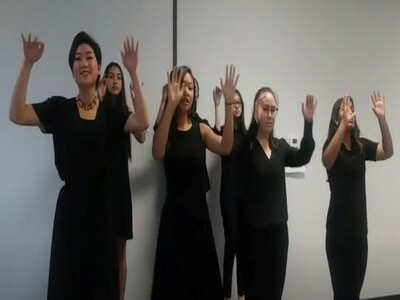
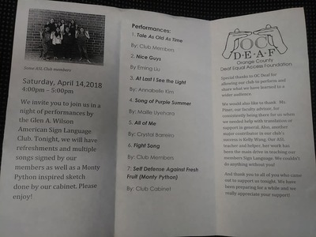
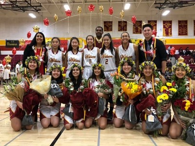
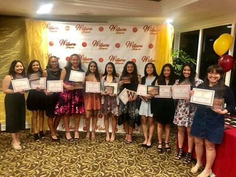
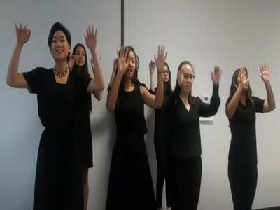
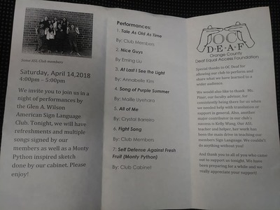
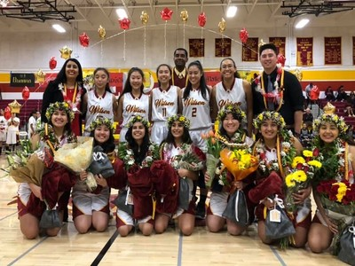
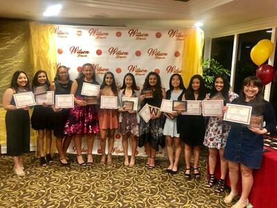

Crystal Barreiro
Currently enrolled in UCR as an undergraduate in Pre-Business but am aiming to major in International Business. Planning to specialize either in Data Analytics or Marketing.
Looking for a career that will allow me to broaden my horizons domestically and globally. One that will give me the opportunity to meet diverse people, cultures, and places. As well as challenges me to expand my perspectives, discover different approaches, and develop new strategies. Very comfortable in a fast-paced environment, I am adaptive, goal oriented, and eager to learn. Open to explore a wide scope of positions and willing to venture new projects. Adept with computer software, such as Microsoft Word, Excel, and PowerPoint.
As a middle child born in a Latino household, I learned from a very young age that interpersonal skills are a major component in life to communicate with others across all age groups. Being raised in a conservative church-going family, I exercised these skills as I slowly familiarized myself with the church’s organization, leaders, and members. In the years to follow, I also become aware of the importance of finance such as having a stable income, personal savings, and budgeting. Having seen and experienced my mother’s struggle economically instigated my interest to pursue a career in business. My interest in the area of International Business became evidently prominent in my high school years. As a participant in the Global Business and Logistic Pathway at Schurr High School, my previous secondary school, I developed a deeper engrossment for the field. From brand making to personal finance, the possibility of business being a career became more appealing with each new subject. At this time, the teacher advisor for the pathway introduced International Business. After a few lectures, a guest speaker in that profession, and a field trip, I was convinced and decided that International Business would be my career path.
I carried all the knowledge I received in this pathway with me to my new and final high school, Glen A. Wilson. Determined to do business internationally, I joined the American Sign Language Club as a Treasurer to gain experience handling money and learn about an entirely new community along with how to communicate with them, rising to become President the following year as a senior. During this time period, I was also given the role of President of the Young Women in church. Both presented leadership experiences in managing an organization and a group of people. I was able to strengthen my management and coordination skills as director and facilitator of events, meetings, activities, and field trips. A major event that I helped supervise and produce was the annual girls’ camping trip of my church called Girls’ Camp. With little assistance from the church leaders except in providing payment and medical staff, location, activities, meal plans, clean up schedules, transportation, and events were all planned by my fellow peer leaders and I for a week-long excursion in the woods. Traditionally, a huge service project is also done by the girls during this week as a way to give back to the community, which was decided to put together gift boxes to children cancer patients. I spearheaded this project in gathering all the materials needed to create such boxes by constantly asking for donations and organizing fundraisers.
Experience
Young Women President
• Organized fundraisers
• Managed donations and donator dealings
• Planned group activities
• Handled promotion for meetings, activities, and fundraisers
• Improved participation from inactive young women members
• Scheduled field trips
• Collaborated with multiple church leaders and organizations
• Responsible for all young women between ages 12 and 18
• Supervised all young women during activities and trips
• One of main developers and designers for yearly Girls' Camp
• Directed Girls' Camp activities and groups
• Facilitated and mobilized Girls' Camp main service project
President of American Sign Language Club
• Guided members in learning ASL
• Planned lessons
• Organized fundraisers
• Handled promotion for meetings, activities, and fundraisers
• Managed money collections
• Scheduled group activities
• Collaborated with multiple organizations
Girls'Basketball Member
• Disiplined in time management, communication, and goal-setting
• Committed to 4 years and daily 2-hour practices
• Collaborated with others in fast-paced environment
• Guided and encouraged younger memebers
Education
Glen A. Wilson
University of California Riverside
University of California Riverside
Portfolio





 
 